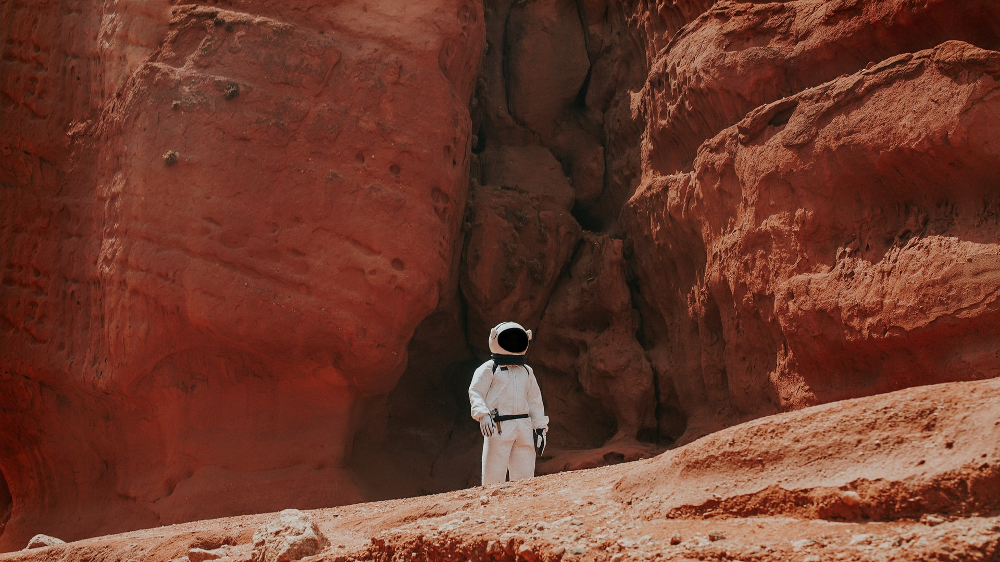

Viajes a Marte
A continuación pordrás encontrar un listado con nuestros viajes disponibles en estos momentos, prepárate para vivir una aventura increible. El viaje al cráter Jezero está en oferta en estos momentos, !No dejes de consultarlo!.
Si no quieres perderte ninguno de nuestros nuevos itinerio,
Suscríbete a nuestra newsletter. Recibirás en tu correo puntualmente nuestras actualizaciones, ofertas y nuevos viajes. ¡No pierdas tu plaza por no enterarte a tiempo!
-
Cráter Jezero
Viaje al lugar de aterrizaje del Rover Perseverance, una antiguo delta que ha entrado en la historia de la exploración espacial. Las primeras huellas de un robot sobre la superfície marciana. Ver detalles del viaje
-
Expedición geológica
Una interesante expedición por los diferentes estratos de la geología marciana. Acompañados por expertos geológos, descubriremos a historia del planeta rojo reflejada en su suelo y subsuelo. Ver detalles del viaje
-
Viaje de película
Revive con nosotros escenas míticas de películas marcianas como The Martian,John Carter o Desafío Total (la de los 90) en sus auténticos sets de rodaje en Marte. ¡Fotos, selfies, acción y sonrisas aseguradas! Ver detalles del viaje
-
Viaje de aventura
Los acantilados, precipicios y montañas de la Tierra no son suficientes. Aventúrate a escalar, bajar y recorrer el Cañon más grande de la galaxia, el Gran Cañon de Marte: 3.000 kilómetros de largo y 600 kilómetros de ancho. Ver detalles del viaje